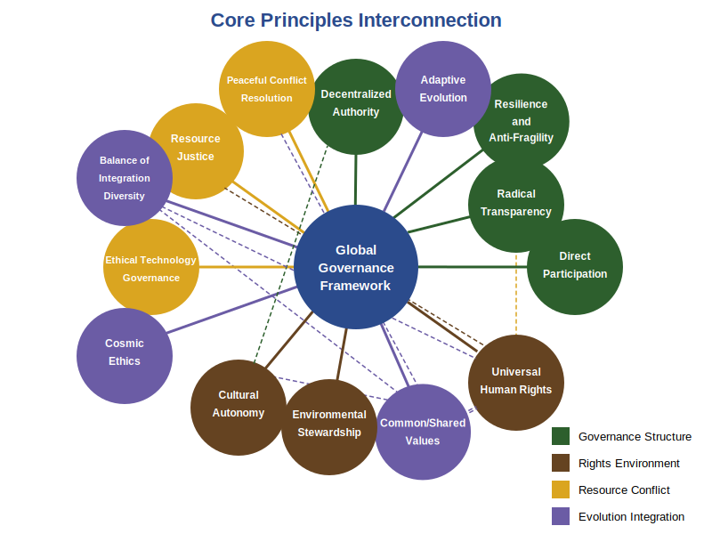

Core Principles Interconnection
This diagram illustrates how the thirteen constitutional principles work together as an integrated system. The principles are organized by function: governance structure (green), rights and environment (brown), resource and conflict management (gold), and evolution and integration (purple). Each principle connects to the central Global Governance Framework while also reinforcing and balancing other principles.
Core Principles
The Global Governance Framework is built on several foundational principles that provide its ethical foundation and practical guidance. These principles work together to create governance systems that are democratic, adaptive, and respectful of diversity.
1. Decentralized Authority (Subsidiarity)
Principle: Power should be distributed across multiple levels, with decisions made at the lowest effective level of governance. Higher levels only handle issues that cannot be effectively addressed locally.
In Practice:
- Local communities maintain autonomy over day-to-day governance
- Regional bodies coordinate cross-community matters
- Global governance focuses exclusively on planetary challenges
- No central authority can override local self-determination without clear justification
This principle prevents the concentration of power that leads to authoritarianism while ensuring effective coordination on truly global challenges like climate change, pandemics, and technological regulation.
Current Examples:
- The Nordic Council demonstrates decentralized governance where nations maintain sovereignty while cooperating on shared challenges.
Additional Real-World Applications:
- Swiss Canton System: Switzerland’s federal structure divides authority between federal, cantonal, and municipal levels, with cantons retaining significant autonomy over education, healthcare, and policing while participating in national governance.
- Transition Town Movement: Communities worldwide implement local resilience initiatives within a broader movement framework, making decisions at the neighborhood level while sharing knowledge through regional and global networks.
- Indigenous Guardianship Programs: In Canada and Australia, Indigenous communities manage environmental protection of their territories through cooperative agreements with regional and national governments, keeping decision-making rooted in local knowledge.
2. Radical Transparency
Principle: All governance processes must be fully visible and accessible to citizens, with no secret decision-making or hidden resource allocation.
In Practice:
- Public access to decision-making processes and rationales
- Open data on all governance activities
- Multiple verification methods to prevent technological gatekeeping
- Citizen oversight mechanisms for real-time accountability
Transparency is the immune system of good governance—it prevents corruption, builds trust, and ensures accountability to the people rather than to elites.
Current Examples:
- Blockchain verification systems for governance decisions and resource allocation.
Additional Real-World Applications:
- Estonia’s e-Government: Estonia’s digital governance platform allows citizens to view exactly how their data is used by government agencies, with a transparent access log showing who accessed what information and when.
- Participatory Budgeting in Porto Alegre: This Brazilian city pioneered transparent budget allocation processes where citizens can track exactly how municipal funds are allocated through public databases and regular community meetings.
- OpenCorporates: This global database makes corporate ownership structures transparent, helping identify shell companies and prevent corruption, demonstrating how transparency tools can cross jurisdictions.
3. Direct Participation
Principle: Every individual has the right to participate in decisions affecting them, through multiple channels of engagement.
In Practice:
- Direct voting on policies through digital platforms
- Citizen assemblies at local, regional, and global levels
- Liquid democracy allowing vote delegation to trusted representatives
- Equal access regardless of wealth, location, or status
Participation ensures that governance reflects collective wisdom rather than elite interests, while creating a sense of ownership and legitimacy.
Current Examples:
- Digital democracy platforms like Decidim and vTaiwan enable large-scale citizen participation.
Additional Real-World Applications:
- Irish Citizens’ Assemblies: Ireland used randomly selected citizen assemblies to deliberate on complex issues like abortion and climate change, leading to constitutional amendments that reflected informed public deliberation.
- Crowdlaw Initiatives: Cities like New York, Madrid, and Mexico City use digital platforms to involve citizens directly in drafting legislation, moving beyond consultation to co-creation of laws.
- Participatory Land Use Planning in Medellin: This Colombian city transformed from violence to innovation partly through neighborhood planning processes where residents collectively designed public spaces and infrastructure priorities.
4. Universal Human Rights
Principle: Certain rights are non-negotiable and must be protected for all people, regardless of nationality, culture, or circumstance.
In Practice:
- Freedom of expression, belief, and peaceful assembly
- Bodily autonomy and physical security
- Mental sovereignty (protection from forced technological influence)
- Access to basic needs through fair economic systems
- Protection from discrimination and exploitation
Human rights establish the ethical floor below which no governance system can fall, ensuring that diversity does not become an excuse for oppression.
Current Examples:
- National constitutions and international treaties that protect fundamental freedoms.
Additional Real-World Applications:
- Finnish Basic Income Experiment: Finland tested providing unconditional basic income to citizens, demonstrating how economic rights can be implemented within existing governance systems.
- Ecuador’s Rights of Nature Constitutional Provisions: Ecuador’s constitution recognizes nature’s right to exist and regenerate, expanding rights frameworks beyond humans to ecosystems.
- The Internet Rights & Principles Coalition: This multi-stakeholder group translates offline human rights to the online world, creating frameworks for digital rights implementation across jurisdictions.
5. Environmental Stewardship
Principle: Earth’s ecosystems have inherent rights and must be protected, with resources managed for long-term regeneration rather than short-term extraction.
In Practice:
- Legal personhood for natural systems (rivers, forests, etc.)
- Global commons management of essential resources
- Intergenerational equity in resource decisions
- Ecological impact assessments for all major decisions
This principle recognizes that humanity is part of Earth’s living system, not separate from it, and that governance must operate within planetary boundaries.
Current Examples:
- Legal personhood for natural systems like rivers and forests.
Additional Real-World Applications:
- Costa Rica’s Payment for Ecosystem Services Program: Costa Rica reversed deforestation by paying landowners for ecosystem services their forests provide, creating economic incentives aligned with environmental protection.
- European Water Framework Directive: This transnational approach manages water resources based on natural watershed boundaries rather than political borders, aligning governance with ecological systems.
- Community Conserved Areas in India: Local communities legally manage conservation areas based on traditional ecological knowledge, demonstrating how environmental stewardship can combine local autonomy with higher-level protection.
- China’s “Ecological Red Lines” Policy: Legally protects approximately 25% of China’s territory from development, demonstrating large-scale environmental conservation integrated with economic planning.
6. Cultural Autonomy
Principle: Communities retain the right to preserve and develop their cultural practices, languages, and governance models within the ethical framework of universal rights.
In Practice:
- Protection of cultural heritage and linguistic diversity
- Self-determination in cultural matters
- No forced cultural assimilation
- Cross-cultural dialogue and exchange
Cultural autonomy ensures that global governance strengthens diversity rather than imposing uniformity, while universal rights prevent cultural relativism from enabling oppression.
Current Examples:
- Protection of linguistic diversity and cultural heritage within shared frameworks.
Additional Real-World Applications:
- Sámi Parliament: In Nordic countries, the indigenous Sámi people maintain their own parliament with authority over cultural affairs, education, and language while participating in national governance.
- New Zealand’s Māori Language Revitalization: Government policies supporting Māori immersion schools and media have helped revitalize an indigenous language while respecting community leadership of the process.
- UNESCO Creative Cities Network: This program supports cultural distinctiveness while enabling knowledge exchange between cities globally, demonstrating how cultural autonomy can thrive within cooperative frameworks.
7. Ethical Technology Governance
Principle: AI and advanced technologies must remain under transparent human oversight, serving humanity rather than controlling it.
In Practice:
- Open-source AI systems in governance
- Citizen oversight of technological development
- Protection of mental sovereignty
- Prevention of technological monopolization
- Data sovereignty frameworks ensuring communities control their digital ecosystems
- Transborder data flow protocols balancing openness with privacy protections
As technology becomes increasingly powerful, governance must ensure it remains aligned with human values and democratically controlled.
Current Examples:
- Open-source AI systems and citizen oversight of technological development.
Additional Real-World Applications:
- Amsterdam and Helsinki Algorithm Registers: These cities created public registers of algorithms used in municipal services, allowing citizens to understand how automated decisions are made.
- Taiwan’s Civic Hackers (g0v): This community of technologists works with government to develop open-source civic tools, demonstrating how civil society can shape ethical technology development.
- Barcelona’s DECODE Project: This initiative gives citizens control over their personal data through cryptographic tools, creating technological alternatives to corporate data extraction.
- The EU’s General Data Protection Regulation (GDPR): Implements a citizen-centric approach to data sovereignty, giving individuals control over their personal information across borders.
- Estonia’s e-Governance: Provides transparent digital services while maintaining strong privacy protections, demonstrating how governments can utilize technology while respecting citizens’ digital rights.
8. Resource Justice
Principle: Essential resources must be distributed fairly, preventing both scarcity and excessive concentration of wealth and power.
In Practice:
- Adaptive Universal Basic Income (AUBI) and other fair distribution systems
- Progressive taxation on automation, resource extraction, and financial speculation
- Prevention of resource monopolization
- Regenerative economic models
Resource justice ensures that technological progress and natural abundance benefit all of humanity, not just a privileged few.
Current Examples:
- Universal Basic Income pilots and community resource management.
Additional Real-World Applications:
- Alaska Permanent Fund: Alaska distributes a portion of oil revenues equally to all residents, demonstrating how shared ownership of natural resources can be implemented.
- Bhutan’s Gross National Happiness Framework: Bhutan evaluates policies based on happiness and well-being rather than solely economic metrics, redefining resource allocation priorities.
- Community Land Trusts: From Boston to Brussels, these democratically governed entities hold land in trust for community benefit, preventing speculation and ensuring affordable housing.
9. Peaceful Conflict Resolution
Principle: Global governance must provide mechanisms for resolving disputes without violence, transitioning from military competition to cooperation.
In Practice:
- Global conflict mediation systems
- AI-assisted early warning for potential conflicts
- Redirection of military resources toward humanitarian and ecological needs
- Cooperative security rather than competitive armament
This principle recognizes that violence is inefficient, destructive, and ultimately unnecessary in a well-designed governance system.
Current Examples:
- Global conflict mediation systems and cooperative security rather than competitive armament.
Additional Real-World Applications:
- West Africa’s ECOWAS Conflict Prevention Framework: This regional body successfully intervened in Gambia’s 2017 constitutional crisis through coordinated diplomatic and military pressure, preventing violence without warfare.
- Colombia’s Truth and Reconciliation Commission: Colombia’s peace process included comprehensive mechanisms for acknowledging past harms and rebuilding community relationships.
- Shared Waters Data Exchange: Israel and Jordan maintain technical water cooperation despite political conflicts, demonstrating how resource management can build peace through practical collaboration.
10. Adaptive Evolution
Principle: Governance systems must be designed to evolve through regular review and revision, allowing for systemic learning and adaptation.
In Practice:
- Regular constitutional reviews and updates
- Evidence-based policy assessment
- Citizen-led reform processes
- Experimental governance zones to test new approaches
Adaptive governance avoids becoming rigid or outdated, instead evolving with new challenges, technologies, and understanding.
Current Examples:
- Regular constitutional reviews and experimental governance zones.
Additional Real-World Applications:
- Finland’s Experimental Governance Office: This government agency designs policy experiments, evaluates outcomes, and adapts legislation based on evidence, institutionalizing policy learning.
- New Zealand’s Regulatory Sandboxes: These controlled environments allow testing of innovations under regulatory supervision before broader implementation, balancing innovation with risk management.
- Cities Coalition for Digital Rights: This evolving alliance of cities develops digital rights principles through iterative implementation and mutual learning, demonstrating adaptive governance across jurisdictions.
11. Balance of Integration & Diversity
Principle: Global unity must not come at the cost of homogenization—governance should strengthen both unity and diversity simultaneously.
In Practice:
- Multi-level governance respecting local variations
- Celebration of diverse governance approaches within shared ethical frameworks
- Cross-cultural dialogue and mutual learning
- Integration without forced uniformity
This principle rejects the false choice between fragmentation and homogenization, seeking instead a unity that enhances rather than diminishes diversity.
Current Examples:
- Multi-level governance respecting local variations within common frameworks.
Additional Real-World Applications:
- European Capitals of Culture Program: This initiative celebrates distinct cultural identities while fostering European integration through shared experiences and exchanges.
- Mondragon Cooperative Corporation: This network of cooperatives maintains individual business autonomy while sharing resources and values, balancing local control with the benefits of scale.
- Asia-Pacific Economic Cooperation (APEC): This forum allows diverse economies to integrate gradually through non-binding commitments, respecting different development paths while working toward shared prosperity.
12. Cosmic Ethics
Principle: As humanity expands beyond Earth, the same ethical principles apply to space governance, preventing exploitation and ensuring sustainable expansion.
In Practice:
- Space as a global commons, not subject to national or corporate appropriation
- Ethical treatment of potential extraterrestrial life
- Sustainable and equitable space resource utilization
- Democratic governance of off-world settlements
Cosmic ethics extends our governance principles beyond Earth, ensuring that space expansion becomes a force for cooperation rather than a new frontier for competition and exploitation.
Current Examples:
- Space as a global commons and ethical treatment of potential extraterrestrial life.
Additional Real-World Applications:
- The Outer Space Treaty: This international agreement establishes space as the province of all humanity, preventing national appropriation and requiring peaceful use.
- SETI Protocols: The search for extraterrestrial intelligence community has developed protocols for responding to potential contact, demonstrating proactive ethical frameworks for unprecedented scenarios.
- Dark Sky Preserves: These protected areas reduce light pollution for astronomical observation and wildlife protection, showing how terrestrial governance can incorporate cosmic awareness.
13. Resilience & Anti-Fragility
The Principle: In our current transition period, governance systems must be designed to not only withstand shocks and disruptions but to learn, adapt, and evolve through challenges. Resilience serves as a bridge toward a future where humanity has resolved its major systemic issues.
In Practice:
- Decentralized backup systems for critical infrastructure
- Stress-testing governance structures for crisis response
- Diverse and redundant decision-making pathways
- Distributed resource networks that can function during disruptions
- Continuous learning systems that integrate lessons from crises
- Cross-scale coordination between local flexibility and regional support
- Preventative approaches that address vulnerabilities before crises occur
In Practice: Real-World Examples:
- Estonia’s “Data Embassies”: The country maintains secure servers in allied nations that can maintain government operations even if physical infrastructure is compromised, demonstrating digital resilience.
- Japan’s Disaster Governance Networks: Following the Fukushima disaster, Japan developed nested coordination systems connecting neighborhood, municipal, and national response teams with clear communication protocols.
- Singapore’s National Climate Adaptation Plan: This comprehensive approach combines infrastructure resilience, financial mechanisms, and community preparedness to address sea-level rise and extreme weather events.
- Rojava’s Autonomous Administration: This community-based governance system in Northern Syria has maintained basic services and democratic functions despite ongoing conflict through distributed decision-making and local resource management.
- New Zealand’s Living Standards Framework: This policy tool measures multiple forms of capital (natural, social, human, financial) to ensure governance decisions maintain resources needed for long-term resilience.
- Rotterdam’s Water Management System: This Dutch city has transformed its relationship with flooding by creating multi-purpose infrastructure that adapts to different water levels while enhancing urban quality of life.
14. Common/Shared Values
Principle: Governance must identify, articulate, and uphold fundamental ethical values that transcend cultural, religious, and philosophical differences while respecting diverse expressions of those values.
In Practice:
- Dialogue mechanisms between different ethical, spiritual, and religious traditions
- Recognition of multiple valid paths to common ethical outcomes
- Value-based policy frameworks that identify shared human aspirations
- Ethics councils with diverse spiritual and philosophical representation
- Distinguishing between core universal values and their diverse cultural expressions
Common/shared values provide a foundation for dialogue across different worldviews, creating bridges between diverse perspectives while avoiding forced homogenization. This principle helps navigate tensions between universal human rights and cultural autonomy by identifying the common ethical ground that underpins diverse traditions.
Current Examples:
- Interfaith dialogue initiatives that identify shared ethical commitments while respecting theological differences.
Additional Real-World Applications:
- Parliament of the World’s Religions: This global forum brings together diverse religious and spiritual traditions to identify common ethical commitments while celebrating distinct theological approaches.
- UNESCO Universal Declaration on Cultural Diversity: Establishes principles that balance cultural distinctiveness with shared human values, demonstrating how diversity and unity can be mutually reinforcing.
- Earth Charter Initiative: A global civil society initiative that articulates shared ethical principles for environmental stewardship across diverse cultures, religions, and philosophical traditions.
Navigating Tensions Between Principles
The thirteen principles outlined above form a cohesive framework for ethical global governance. However, in real-world implementation, these principles can sometimes appear to be in tension with one another. These tensions are not flaws in the framework but rather inherent complexities of governance that must be navigated thoughtfully. Understanding and addressing these tensions is essential for effective implementation.
Key Tensions and Navigation Approaches
Universal Human Rights vs. Cultural Autonomy
The Tension: How do we uphold universal rights while respecting diverse cultural practices and governance traditions?
Navigation Approach:
- Distinguish between core rights (bodily autonomy, freedom from violence, basic needs) that are non-negotiable and cultural expressions that can vary.
- Emphasize dialogue and participatory processes where communities articulate how universal principles can be realized within their cultural context.
- Recognize that cultural practices evolve, and support community-led processes of change rather than external imposition.
Example Resolution: New Zealand’s legal recognition of the Whanganui River maintained universal environmental principles while incorporating Māori cultural perspectives on the river as a living entity with rights.
Decentralized Authority vs. Global Coordination
The Tension: How do we ensure decisions are made at the most local level possible while addressing issues that require global coordination?
Navigation Approach:
- Apply clear criteria for determining appropriate governance levels based on the scale of impact and externalities.
- Create nested governance structures with well-defined interfaces between levels.
- Ensure bidirectional flows of information and influence, where global frameworks are shaped by local input, not just top-down implementation.
Example Resolution: The Montreal Protocol on ozone-depleting substances established global targets while allowing differentiated implementation strategies and timelines for different regions and economic contexts.
Radical Transparency vs. Mental Sovereignty
The Tension: How do we ensure governance is fully transparent while protecting individual privacy and mental autonomy?
Navigation Approach:
- Distinguish between transparency of governance processes (decision-making, resource allocation) and personal data.
- Design systems where individuals control their own data while governance actions remain fully visible.
- Create technological and legal safeguards that prevent transparency tools from becoming surveillance mechanisms.
Example Resolution: Estonia’s e-governance model maintains transparent government operations while implementing strong digital identity protections for citizens.
Direct Participation vs. Effective Decision-Making
The Tension: How do we ensure broad participation without creating decision paralysis or excluding necessary expertise?
Navigation Approach:
- Implement liquid democracy approaches where people can either participate directly or delegate their voice.
- Design participation mechanisms appropriate to the issue’s complexity and urgency.
- Create tiered participation opportunities from simple input to deeper engagement.
- Use AI and other tools to make complex issues more accessible without oversimplification.
Example Resolution: Taiwan’s vTaiwan platform uses AI to cluster opinions and find areas of consensus, making participation more effective and informed.
Balance of Integration & Diversity vs. Unified Standards
The Tension: How do we create sufficient standardization for systems to work together while preserving diverse approaches?
Navigation Approach:
- Focus standardization on interfaces between systems rather than internal operations.
- Distinguish between principles (standardized) and implementations (diverse).
- Create translation mechanisms between different systems rather than forcing uniformity.
Example Resolution: The European Union’s approach to environmental standards sets common goals and metrics while allowing member states to implement policies aligned with their own administrative and cultural contexts.
Developmental Value Systems vs. Universal Application
The Tension: How do we apply governance principles across communities and societies operating at different developmental stages with distinct value systems and worldviews?
Understanding Spiral Dynamics
Spiral Dynamics is a developmental model that maps how human consciousness and societies evolve through a series of distinct worldviews and value systems. Each stage (often represented by colors like Purple, Red, Blue, Orange, Green, Yellow, and Turquoise) has unique characteristics:
- Purple: Tribal, magical thinking, ancestral bonds
- Red: Egocentric, power-driven, impulsive
- Blue: Order-based, rule-following, purpose-driven
- Orange: Achievement-oriented, strategic, individual success
- Green: Communitarian, egalitarian, consensus-seeking
- Yellow: Systemic, integrated, complexity-aware
- Turquoise: Holistic, global consciousness
For a deeper understanding, visit Spiralize.org
Navigation Approach:
- Developmental Awareness: Recognize that individuals, communities, and societies may be centered at different Spiral Dynamics stages (e.g., Purple tribal, Blue order, Orange achievement, Green egalitarian, Yellow systemic, Turquoise holistic).
- Tailored Communication: Frame principles in language and concepts that resonate with each developmental stage’s values and concerns.
- Stage-Appropriate Implementation: Design governance structures that can function effectively at the predominant development level while creating pathways toward more complex integration.
- Transcend and Include: Structure governance to honor and include the healthy aspects of each developmental stage rather than attempting to force leaps or dismiss earlier stages.
- Developmental Spaces: Create protected environments where emerging value systems can develop without suppression from dominant worldviews.
Example Resolution: In post-conflict regions, governance initiatives that succeed often begin with stability and clear rules (Blue values) before introducing market mechanisms (Orange values) and participatory elements (Green values), recognizing the developmental sequence while holding the vision of more integrated approaches.
Example Resolution: The European Union’s subsidiarity principle allows member states at different developmental stages to implement shared values according to their cultural and historical contexts while maintaining coherent union-wide frameworks.
Practical Application: When implementing Direct Participation, communities centered in Blue order-based values may need more structured, authority-sanctioned participation channels, while Green communities might use consensus-based approaches, and Yellow systems might employ dynamic, context-sensitive participation methods—all while working toward the same principle.
Principles as a Dynamic System
These tensions highlight that the principles function as a dynamic system rather than a static checklist. When implementing the framework:
Recognize Context: The balance between principles may shift depending on the specific context and challenge.
Seek Integration: Look for solutions that honor multiple principles simultaneously rather than forcing trade-offs.
Maintain Dialogue: Continuous dialogue among stakeholders helps navigate tensions in ways that uphold the spirit of all principles.
Evolve Solutions: As contexts change, the way tensions are navigated should evolve, reflecting the principle of Adaptive Evolution.
By thoughtfully addressing these tensions, practitioners can implement the framework with integrity while adapting to the complexities of real-world governance challenges.
Implementing the Principles
These principles are not abstract ideals but practical guides for governance design. They work together as an integrated system—transparency enables participation, decentralization preserves cultural autonomy, and resource justice supports human rights.
To learn how to implement these principles in practice, see the Implementation Guidelines section of the framework.